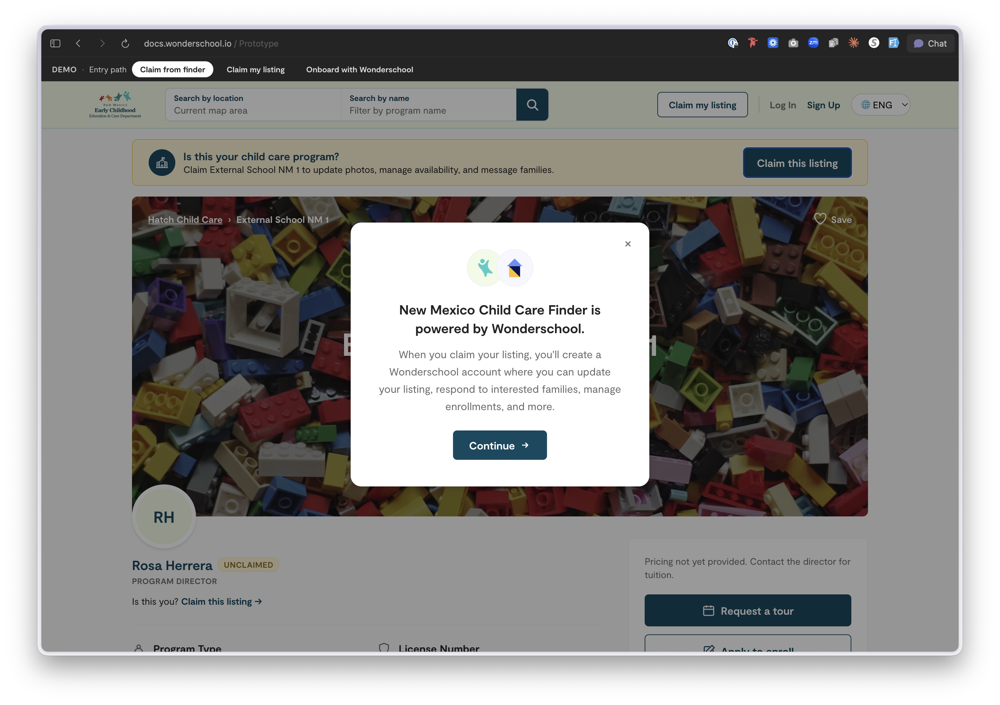
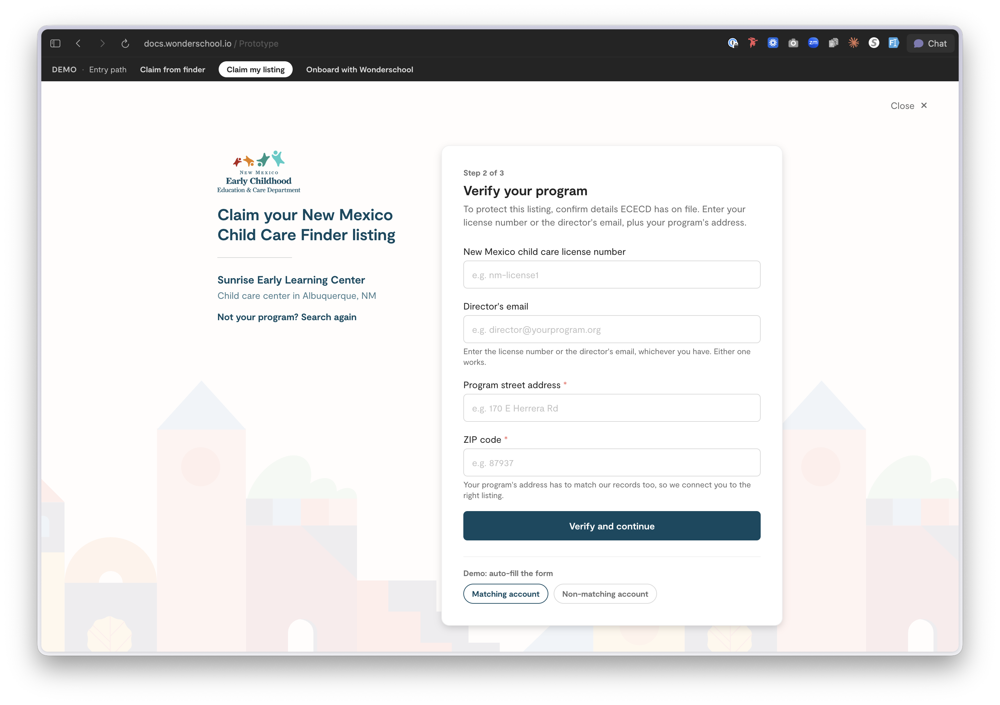
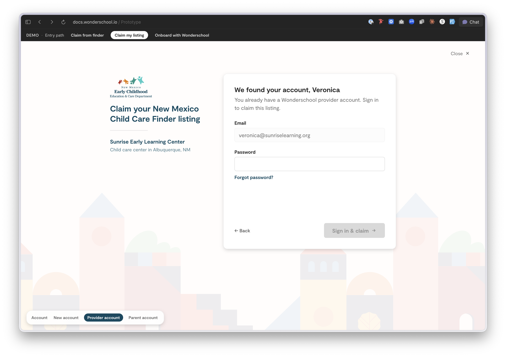

The problem
New Mexico's Early Care and Education Department is standing up a public child care finder for its Universal Child Care program. The state already holds registry data on thousands of programs, but it goes stale the moment it's published, hours change, availability shifts, directors come and go. Asking ECECD staff to maintain it by hand doesn't scale.
The existing claim process made this worse. A provider would click "Claim this listing" on their white-labeled New Mexico finder page and land straight in Wonderschool's generic account creation, no bespoke design, no explanation. Providers got confused about why a state-branded product had suddenly become a completely different one, and that confusion showed up as drop-off right at the moment we most needed them to convert.
The handoff itself isn't going away. Wonderschool's core product doesn't yet support white-labeling (that's on the roadmap), so claiming a listing will always mean stepping from the state-branded finder into Wonderschool proper. The fix wasn't to disguise that shift, it was to introduce it on purpose, with a moment that names both brands and explains what's about to happen before the provider is asked to create an account.
The hypothesis: if providers can claim their own listing through a co-branded experience that explains the handoff instead of hiding it, the state offloads maintenance to the people closest to the truth, and providers gain a reason to keep their page current, because it's now theirs.
What I designed
A complete claim flow, from a family-facing finder all the way to a claimed account, with one deliberate twist: the same flow runs in two brandings side by side, the NM ECECD version (teal, state logo, "contact ECECD" recovery) and the Wonderschool marketplace version (Wonderschool blue, "create a new listing" recovery).
Running both brandings in one prototype pressure-tested whether a single flow could serve a state partner and the national marketplace without forking the design. Because the versions share structure and diverge only in tokens, copy, and recovery routing, the prototype is itself the argument that one flow can serve both audiences.
A real-feeling search results page, filter pills, map, "showing X of Y programs," a Universal Child Care banner. Unclaimed programs surface a "Claim this listing" call to action right where a provider recognizes their own center.
Live typeahead across name, city, license number, director, address, and zip. Forgiving on purpose, a director shouldn't need to know exactly how the state spelled their business name.
The trust gate, and the key UX decision: a two-field check with a confidence cascade. A matching license number alone is enough, but a weak or mistyped license can be rescued by an address match. One rigid field would lock out legitimate owners over a typo; "either path works" keeps the gate meaningful without making it brittle.
Name, live-formatted phone, email, password with inline strength guidance. Email-already-taken is handled gracefully with a "log in instead" off-ramp rather than a dead end.
Intentionally a clean stub, a handoff seam for the post-claim dashboard that comes next.



Craft decisions
Recovery paths are first-class
Every "we couldn't find / verify your program" state is context-aware: the NM flow points to ECECD contact info, the marketplace flow offers "create a new listing." Failure states are where claim flows usually leak users, so they got as much attention as the happy path.
Already-claimed isn't a wall
Already-claimed programs route to a "request to be added as staff" path, because the real-world case, a second director at the same center, deserves a door, not an error.
What's real vs. mocked
The branding, flow logic, fuzzy-matching rules, and recovery UX are the real deliverable. Program data, verification, and account creation are mocked in memory, this is a flow-and-decisions prototype for the ECECD partnership conversation, not a working backend.
What's next
Build the post-claim landing into a real provider dashboard, and wire verification to the actual ECECD registry import.